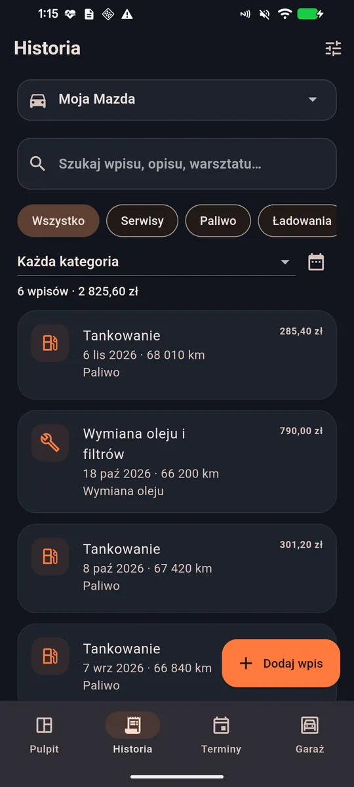
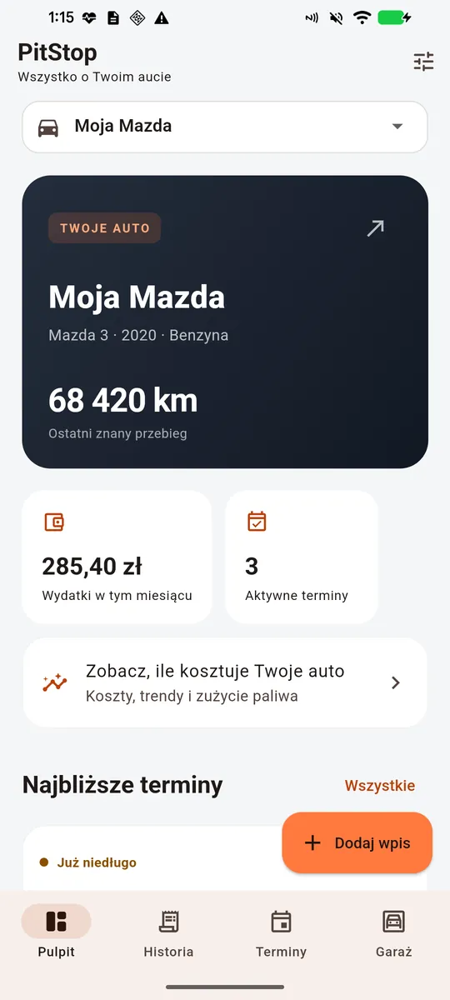

PitStop trzyma historię serwisową auta w telefonie: terminy z datą albo przebiegiem, rachunki z warsztatu, tankowania i kopie z sumą kontrolną.Kod na licencji MIT, zero uprawnień do internetu, zero kont.
W repozytorium wersja 1.0.0.Zrzuty ekranu zrobiono w lokalnym buildzie 2.0.0+2, jeszcze nieopublikowanym.Czym różni się 2.0


Zrzut z builda 2.0.0+2 (schemat bazy 3). Ten sam ekran w 1.0 wygląda prościej i nie ma w nim księgi wydatków.
8
tabel w bazie wersji 2.0tables.dart
4761
linii Dart w wersji 1.023 pliki .dart w repozytorium
0
uprawnień do sieci w manifeścieAndroidManifest.xml
MIT
licencja, bez opłat i kontaLICENSE
Co jest w środku
Funkcje, których używa się co tydzień
Każda funkcja ma swój ekran i swoje miejsce w bazie. Przy każdej stoi plakietka wersji: 1.0 jest w repozytorium, 2.0 czeka na publikację.
2.0
Auto z numerem VIN, napędem i notatką
Nazwa, marka, model, rocznik, rejestracja, numer VIN, zdjęcie i aktualny stan licznika. W 2.0 dochodzi napęd (benzyna, diesel, benzyna plus LPG, hybryda, hybryda plug-in, elektryk), data zakupu i notatki techniczne.
1.0
Serwis z fakturą
Tytuł, data, przebieg, kwota w złotówkach, warsztat i kategoria: wymiana oleju, wymiana opon, przegląd, inne. Do wpisu doklejasz zdjęcie z aparatu albo PDF faktury.
2.0
Części i robocizna osobno
Rozbicie jest opcjonalne: rozwijasz pole „Części i robocizna” i dopisujesz pozycje z rodzajem (część albo robocizna), nazwą i kwotą. Gdy jest choć jedna pozycja, kwota serwisu bierze się z ich sumy.
2.0
Termin w cyklu, który idzie dalej
Termin ustawiasz datą, przebiegiem albo jednym i drugim. Gdy oznaczysz go jako wykonany, aplikacja pyta, czy dopisać wpis do historii serwisów, a potem sama tworzy następny termin: datę liczy od dzisiaj, przebieg od ostatniego odczytu licznika.
Powtarzanie co X miesięcy i co X kilometrów, w tym samym terminie.
Przegapiony termin jest czerwony, bliski bursztynowy: 30 dni albo 1000 km.
Szablony: badanie techniczne, OC, AC, wymiana oleju, zmiana opon.
2.0
Powiadomienia na 7 dni, 1 dzień i w dniu terminu
Alarmy ustawia AlarmManager, budzą telefon rano i po tapnięciu otwierają edycję terminu. Harmonogram wraca po restarcie telefonu, po aktualizacji aplikacji i po zmianie zegara albo strefy czasowej.
2.0
Tankowania liczone dla każdego paliwa osobno
Benzyna, diesel i LPG mają własną średnią. Wpis z zaznaczonym pełnym bakiem jest punktem pomiarowym, a tankowanie oznaczone jako pominięte przerywa liczenie i zaczyna odcinek od nowa. Ładowanie idzie w kilowatogodzinach.
2.0
Historia wszystkich wpisów w jednym strumieniu
Serwisy i wpisy z księgi (tankowanie, ładowanie, wydatek, odczyt licznika) wychodzą z jednego zapytania i są ułożone datą. Wpisu szukasz po tytule, opisie i nazwie warsztatu.
Filtry: kategoria, auto, zakres dat.
Wydatek ma kategorie, także własne: parking, myjnia, opłaty drogowe, ubezpieczenie.
Formularz ostrzega, gdy wpis o takim tytule, kwocie i dacie już istnieje.
1.02.0
Analityka na CustomPainterze
W 1.0: suma kosztów, średnia na serwis i suma na typ serwisu. W 2.0 dochodzi wybór zakresu (ten miesiąc, ten rok, własny okres, cała historia), słupki miesiąc po miesiącu, wydatki według kategorii, koszt kilometra i zużycie paliwa. Wykresy rysuje CustomPainter, bez pakietu zewnętrznego.
2.0
Kopia ZIP z sumą kontrolną
Archiwum ma plik data.json z ośmioma tabelami, folder media i manifest.json z sumą SHA-256 każdego pliku. Przed przywróceniem aplikacja sprawdza integralność kopii i najpierw robi kopię stanu, który teraz masz w telefonie.
2.0
CSV w obie strony i raport PDF
Import dopasowuje kolumny z pliku do dwunastu pól i pokazuje podgląd z numerami wierszy. Błędny wiersz zostaje odrzucony, reszta wchodzi, a powtórne wgranie tego samego pliku nie dodaje wpisów drugi raz. Raport historii to PDF z A4 generowany na telefonie.
2.0
Szkic formularza nie ginie
Niedokończony serwis, tankowanie czy termin zapisują się razem ze zdjęciem. Otworzysz ten sam formularz za godzinę albo po restarcie aplikacji, zastajesz to, co wpisałeś.
1.0
Bez konta, bez reklam, bez internetu
Nie ma logowania, klienta chmury ani wskaźników analitycznych w kodzie. AndroidManifest nie pyta o zgodę INTERNET, więc aplikacja nie ma czym wysłać danych. Pyta za to o aparat, zdjęcia i start przy rozruchu telefonu.
Eksport idzie przez systemowy wybór miejsca zapisu, bez serwera po drodze.
Motyw jasny, ciemny albo systemowy, ustawiany w aplikacji.
Licencja MIT: pobierasz, zmieniasz, wydajesz własną wersję.
Sprawdź na swoich liczbach
Trzy kalkulatory z logiką aplikacji
Ta strona działa offline, ale policzy tak jak PitStop: progi terminów, zużycie paliwa od pełnego baku i koszt kilometra. Formuły są przepisem z plików lib/domain/calculations.dart i lib/features/garage/garage_shell.dart.
To kalkulator na potrzeby strony, nie formularz z aplikacji. Dane wpisane tutaj zostają tylko w tej karcie przeglądarki.
Aplikacja dopisuje kolejny termin, gdy zaznaczysz, że termin jest wykonany. Tutaj policzy tylko progi.
Czerwone: minęło. Bursztynowe: 30 dni albo 1000 km.Termin liczony datą i przebiegiem, jak na pulpicie aplikacji.
Zużycie benzyny
7,5l / 100 km
383 km odczytanego dystansu
Odczytany dystans383 km
Zużyte paliwo28,9 l
Pomiar26 mar - 2 kwi 2026
Koszt trasy181,20 zł
Aplikacja liczy dystans z odczytów licznika, a nie z przebytych dróg.Dwa pełne tankowania wystarczą; im więcej, tym średnia stabilniejsza.
Koszty w grupach i ich wpływ na koszt kilometra
Grupa
Suma
zł / km
Paliwo i energia
0,00 zł
0,00
Serwisy
0,00 zł
0,00
Części zamienne
0,00 zł
0,00
Pozostałe wpisy
0,00 zł
0,00
Koszty przewidywane
0,00 zł
0,00
Rachunki stałe
0,00 zł
0,00
Koszt kilometra
0,00 zł
0,00 zł
Wszystkie wpisy0,00 zł
Tylko moje wpisy0,00 zł
Z prognozami0,00 zł
W analityce koszt kilometra bierze kilometry z dwóch odczytów licznika, a kwoty sumą z groszy. Wpis ten sam kosztuje raz, nawet jeśli dopiszesz go do serwisu i do wydatków.
Ekran po ekranie
Trzy zakładki i jeden ekran dodawania
Dolna nawigacja ma Pulpit, Historię, Terminy i Garaż. Plusem obok niej dopisujesz auto albo wpis, zależnie od otwartej zakładki. Zrzuty kliknij, żeby zobaczyć pełny ekran.
Pulpit: na górze wydatki miesiąca
Pod spodem licznik, najbliższe terminy z progami i ostatnie wpisy. W 1.0 ten ekran ma tylko licznik, sumę kosztów i listę trzech terminów.
Historia z wyszukiwarką i filtrami
Wpisy z księgi i serwisy w jednej liście, filtrowane kategoria, autem i datą. W 1.0 znajdziesz tu wyłącznie serwisy.
Terminy z progiem dni i kilometrów
Aktywne terminy na górze, pod nimi zrobione, obok przycisk powiadomień. W 1.0 termin nie ma cyklu ani alarmów w telefonie.
Przewiń listę w bok albo użyj strzałek w podglądzie. Zrzuty pochodzą z builda 2.0.0+2.
Motyw
Jasny, ciemny i ten systemowy
Ten sam widok w dwóch wariantach, bez osobnych arkuszy stylów. Motyw ustawisz w aplikacji, a strona zapamięta twój wybór w tej przeglądarce.
Ciemny
Tło #11151C, karty #1D222C. Biały tekst ma 18:1 do tła, kolor wiodący 7:1, więc termin po terminie nadal da się przeczytać.
Jasny
Tło #F5F6F8, białe karty, kolor wiodący ściemniony do #BA410C, żeby trzymał 5:1. Ten sam zestaw styli, żadna osobna wersja ekranu.
FF7A3Dkolor wiodącyprzyciski, aktywna zakładka
FFB95Ctermin bliski30 dni albo 1000 km
E5484Dpo terminieprzegapiony serwis
11151Cgranat tłatryb ciemny
1D222Cpowierzchniakarty w trybie ciemnym
F5F6F8tło jasnekontener aplikacji
Dane i prywatność
Pliki leżą w telefonie, bez pośredników
Bazę SQLite tworzy Drift w katalogu aplikacji. Kopię robisz sam, plik CSV zapisujesz tam, gdzie wskażesz, a kopii na chmurze nie ma, bo aplikacja nie ma zgody na internet.
1
Formularz i walidacja
Kwota z dwoma miejscami po przecinku, data z kalendarza, licznik w kilometrach. Błędne pole dostaje komunikat, a niedokończony formularz zostaje jako szkic.
2
Interfejs słucha bazy
Riverpod trzyma listy, filtry i wybrane auto. Ekrany słuchają strumieni z bazy, więc zapisany wpis wchodzi na listę bez ręcznego odświeżania.
3
Repozytorium i transakcje
Warstwa repozytorium składa serwisy z księgą w jednym zapytaniu i pilnuje spójności: zaznaczenie terminu jako wykonanego to transakcja z dopisaniem wpisu i nowego terminu.
4
Plik w telefonie
car_service.db w katalogu aplikacji, zdjęcia i PDF-y obok. Baza ma włączone klucze obce i trzy indeksy pod listy, a dostęp idzie przez izolatę, więc interfejs nie staje.
Czego w kodzie nie ma
kontoNie ma rejestracji, logowania ani profilu w chmurze. Pierwsze uruchomienie prosi o dodanie auta.
chmuryBrak klienta chmury w zależnościach. Kopia ZIP leży w katalogu aplikacji, a co z nią zrobisz, zależy od ciebie.
reklam i analitykiZero pakietów reklamowych i wskaźników. Nie ma czego blokować w tej aplikacji.
internetuW manifeście nie ma uprawnienia INTERNET. Wyliczenia, kopie i PDF-y dzieją się na telefonie.
lokalizacjiBrak zgody na GPS. Wpis o warsztacie bierze nazwę z pola, które sam wpiszesz.
OBD i BluetoothaAplikacja nie dzwoni do auta. Stan licznika przepisujesz z deski rozdzielczej.
Jak to leży
tabeleAuto, serwisy, załączniki, pozycje serwisu, terminy, księga, ustawienia, własne kategorie.
kwotyGrosze w kolumnach cost_cents i amount_cents. Wpis na 37,72 zł to zapis 3772.
schematWersja 3. Migracja z jedynki zakłada tabelę terminów, z dwójki dokłada księgę, pozycje serwisu, ustawienia i kwoty w groszach.
terminTen sam wiersz potrafi mieć datę i przebieg, a cykl dopisuje następny wiersz z ustawionym powtarzaniem.
szkicSzkic formularza i dołączone do niego pliki lądują w tabeli ustawień, dopóki nie zapiszesz albo nie porzucisz wpisu.
kopiadata.json z ośmioma tabelami, folder media i manifest z sumą SHA-256 na każdy plik w archiwum.
Kod i liczby
Flutter, Dart, osiem tabel i zero plików konfiguracyjnych na serwerze
Repozytorium techparka/pitstop trzyma kod aplikacji i tej strony w katalogu docs/. Poniżej liczby zmierzone 15 listopada 2026 roku, na wersjach z tej strony.
dart run build_runner build --delete-conflicting-outputs
flutter test
flutter build apk --release
Od Fluttera 3.16 wzwyż, z dodatkami Androida. Czwarty krok generuje kod Drifta do plików .g.dart, bo nie trzymamy ich w repozytorium.
Build nie potrzebuje kluczy, serwera ani zmiennych środowiskowych. Wersja aplikacji jest w pubspec.yaml, motyw w lib/core/theme/app_theme.dart.
Czego użyto
Flutter
Dart
Material 3
Riverpod
go_router
Drift + SQLite
intl (pl_PL)
CustomPainter
archive + crypto
image_picker
open_file
AlarmManager (Android)
Bez pakietu do wykresów: słupki i linie rysuje CustomPainter. Bez pakietu PDF: raport powstaje w kodzie Androida na PdfDocument.
MIT
Licencja MIT, bez drobnego druku
Możesz używać, kopiować, zmieniać, łączyć z własnym kodem, dystrybuować, sprzedawać kopie i zmieniać licencję. Zostaw tylko notkę z licencją i nazwiskiem autora w kopiach, które rozdajesz. Kod jest dany bez żadnych gwarancji, więc za zgubiony termin przeglądowy odpowiadasz sam.
Aplikacja startuje na liście aut. Dalej dodajesz auto, potem serwis z ostatniej faktury, a na koniec termin na następną wymianę oleju.
1
Auto i licznik
Nazwa, marka, model, rocznik i rejestracja wystarczą, żeby ruszyć. Licznik możesz przepisać z deski rozdzielczej, a numer VIN, napęd i datę zakupu dopisać później.
2
Ostatni serwis
Data, kilometry, kwota i warsztat. Zdjęcie faktury dołączysz z aparatu albo z galerii, a PDF wrzucisz w tym samym miejscu, co zdjęcie.
3
Termin, który wróci sam
Daj terminowi datę, kilometry albo jedno i drugie, ustaw powtarzanie, a rano dostaniesz znak, że czas. Wykonany termin sam wystawia następny.
Nie ma tego w Google Play.APK pobierasz z Releazów na GitHubie i zezwalasz telefonowi na instalację z tego jednego źródła. Na służbowym telefonie sprawdź przed instalacją rozmiar i sumę pliku z opisu release.
Android 5.0 albo nowszy.Build bierze API 21 w górę i jest sprawdzony na telefonie z Androidem 14. Na tablecie i w przeglądarce nie działa: aplikacja jest na jeden telefon.
Aktualizacja z 1.0 do 2.0.Baza ma numery wersji, więc migracja z dwójki do trójki idzie sama, bez utraty danych. Własne buildy nadpiszą się tylko wtedy, gdy podpis i pakiet com.example.car_service zostaną te same.
Częste pytania
Czy PitStop jest darmowy?
Tak. Kod jest na licencji MIT, więc możesz go pobrać, zmienić i wydać własną wersję. Nie ma konta, reklam, abonamentu ani zakupów w aplikacji.
Czy aplikacja działa bez internetu?
Tak, i to dosłownie: w pliku AndroidManifest.xml nie ma uprawnienia INTERNET, więc aplikacja nie ma czym wysłać danych. W trybie samolotowym działa wszystko, łącznie z PDF-em raportu.
Gdzie są zapisane dane?
W pliku car_service.db w katalogu aplikacji, razem ze zdjęciami i dokumentami. Kopie to archiwum ZIP z plikiem data.json i folderem media, w katalogu backups obok. Kopie nie są szyfrowane, więc obchodź się z nimi jak z telefonem bez blokady.
Czy dane trafią do chmury albo na serwer?
Nie. Nie ma konta, klienta chmury ani wskaźników analitycznych. Zrzut z telefonu przenosisz sam, na przykład przez eksport CSV albo plik kopii.
Czym wersja z repozytorium różni się od wersji ze zrzutów?
W repozytorium jest wersja 1.0.0: historia serwisowa, proste terminy, statystyki i baza na Drift, schemat numer 2. Zrzuty zrobiono w lokalnym buildzie 2.0.0+2 ze schematem numer 3, który dokłada księgę tankowań i wydatków, terminy w cyklu z powiadomieniami, kopie ZIP z SHA-256, import CSV z mapowaniem, raport PDF i rozbicie serwisu na części oraz robociznę. Dwójki jeszcze nie ma na GitHubie.
Dlaczego mam instalować APK z GitHuba?
Bo aplikacja nie jest w Google Play. W wydaniach na GitHubie leży plik APK, a telefon pozwala go zainstalować, gdy zgodzisz się na to jedno źródło. Przed wrzuceniem na własny telefon sprawdzisz rozmiar i sumę kontrolną z opisu wydania.
Po co aplikacji aparat i zdjęcia?
Żeby dołączyć zdjęcie licznika, tabliczki znamionowej albo faktury do wpisu. Zdjęcia i PDF-y zostają w pamięci aplikacji, a zgody na internet nie ma, więc nic z nich nie wychodzi z telefonu.
W jakim języku jest aplikacja?
Tylko po polsku. Nazwy pól i komunikaty są wpisane w kod, a daty oraz kwoty formatuje intl z ustawieniem pl_PL, więc drugi język wymagałby warstwy opisów, której teraz nie ma. Ta strona jest dwujęzyczna, aplikacja na razie nie.
Odpalisz w kwadrans
Pobierz APK, wrzuć trzy ostatnie rachunki
Bez konta, bez internetu i bez plików cookie, również na tej stronie. Po instalacji zostaje lista aut; reszta zależy od tego, co sam wpiszesz.